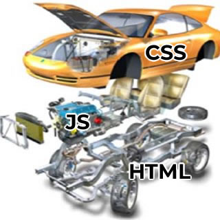
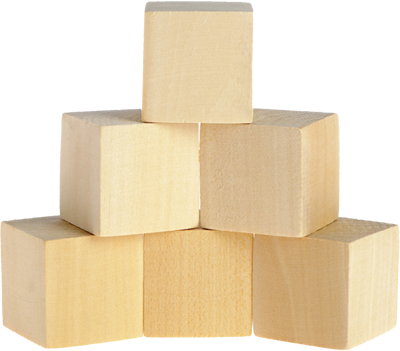

This week we will explore the powerhouse of web development, JavaScript. What it is, how it works, and how it fits into the base web site standards we all know and love, HTML and CSS.
JavaScript is an Object Oriented Scripting language, that at it's simplest adds interactivity to a website.
If we were to think of a website as a car, the various parts could be broken down as follows:
HTML would be the chassis and structural components of the car. The bits that hold everything together and make it what we know as a car.
This is as HTML works on a website, the HTML forms the skeleton, the bones on which the site is built.
The CSS would be the body of the car, the shell, the paint, the interior, everything about how the car looks.
Much as on a web site how everything is styled using CSS, the color scheme, layout, is all controlled by CSS.
The JavaScript (JS) is the engine, driveshaft, pedals and gearbox. It is the bit the enables the car to be driven. It is what tells the engine to accelerate when the driver presses the accelerator. It Lets the user interact and "control" the site.
JavaScript controls a website, by interacting with the DOM, or Document Object Model. In this, every element on a webpage from the browser window itself, to the individual element tags, are what are referred to as Objects.
Objects are essentially what you would think of as an object. A thing that you can identify, and which you "know" things about.
Take the above childrens building blocks toy. We know that these are building blocks just by looking at them, we know they are made of wood. We know that there are six of them.
This is much like an object in JavaScript, it is a "thing" which we know information about as it is stored inside. We could describe these childrens blocks in JavaScript as below.
// This format defines an object called Childrens Blocks
var childrensBlocks = {
description: "Toy blocks for a child",
contents: block,
quantity: 6
}
// This is creating a second object called block,
which is included in the childrensBlocks object as "contents"
var block = {
description: "A single block",
material: "Wood",
numSides: 6,
Length: 5,
Width: 5,
Height: 5
}
In the above example I demonstrated creating two objects in JavaScript, the first is the Toy "childrensBlocks", in here we have a description, of what "childrensBlocks" are, what is contained in the "childrensBlocks" toy, and how many of them are in the toy. You will notice that the contents of childrensBlocks is another object called "block". Which we have a description, material, how many sides and the dimensions of the sides which allow us to understand the shape of the block.
This is how objects work, they are organised "things" which have properties, which can be read, manipulated, or changed with JavaScript. The key is that EVERYTHING is an object, and has these properties. From ones that you create as above, to <p> tags, to the browser window. Everything is an object and can be manipulated with JavaScript.
Objects are far larger than what I have been able to briefly summarise here, they have endless possibilities in what they can do. As not only can you store data in "key":"value" pairs, but you can actually add functions/methods to an object definition which can be called on any object of that type that you create in the future.
A way of storing data that is different to an object is by using arrays.
An array is a list of items in a single variable. These items can be any format and any order. An example of an array is a shopping list, Where you write down a list of all of the things that you need to buy. When finding information in an array, you can find it one of two ways, you can read each line to find the one that matches the entry you are looking for, or if you know which line of the page your item is on, you can go directly to that line number to find it.
This is exactly how searching an array works, you have the option to loop through an array and search each entry for the item you are looking for, or if you know the index (line number) in the array you are looking for you can go directly there.
// Create Shopping List Array
var array = ["Apples", "Pears", "Cereal", "Bread", "Milk"];
// Create Search Toggle
var breadFound = false;
// Loop through Array while bread is not found
for (var i = 0; breadFound == false; i++){
// Check if current entry in array is bread
if (array[i] == "Bread"){
// Bread found, set toggle, and buy bread
breadFound = true;
buyBread();
}
}
// OR Access Bread directly
// We know bread is in the fourth position which is index 3
var bread = array[3];
You may be confused as to why we used index 3 when wanting to access the fourth property in the array. The reason for this is in programming, the first entry or item is always index 0, so while you may look at the shopping list array above and see Apples is in position 1, that is index 0. A general rule of thumb for this is to count through an array normally, and then subtract 1 to get your index number.
In the above two sections we touched on what an object is and what an array is. And while they both store groups of data, the two are very different. They are different both in how they function, and what they are designed for.
An array is a grouping of like information. It can store a lot of information and is extremely useful when storing a lot of items together. An object on the other hand is a single entity. This single entity can have a lot of properties defined about it, but it is a single element, as opposed to an array containing details of multiple elements.
As described above, to access data from an array you can loop through it or navigate to an index, with an object you have another method of accessing the data, because an object is defined using what is called a "key": "value" pair. So just as with an array you can call an array's index, you can call an objects value by calling the "key" that is associated with it. To use the block example above, if I wanted to know what the length of the block is I would call either block.length or block["length"]. Either of these would return the value associated with length from block.
If they are so similar why do we need both? We need both because they serve very different purposes. An Object can store a boat load of information about an object, it can store related functions, details and many other things. However each object is an individual identity. Just as we could have an object called "person", that person would have a name, an age, an address, and all sorts of other information which we could obtain by calling on the key. However it cannot be two people. If we wanted two people we would need a second object called "person2".
As you can imagine, once you start dealing with multiple people in a database, or a application, you could have an infinite number of people, and creating a new object for each one would be impossible. So how do we keep track? With an array of objects.
You can create an array, in which each entry in the array is a person. Each one of those entries has the exact same keys, the same values, and the same functions accessible to them, and this is why we need both.
As stated earlier, everything is an object, and this is why it is called the DOM, or the Document Object Model. Because everything in the "document" or web page is an object.
Everything from the browser window, the page content, and each element on the page is an object with properties associated with it, just like the childrensBlocks example above.
In order to interact with the DOM, we need to call or reference a top level object, and then navigate through the DOM to find the object we want, and then manipulate the content as we wish.
// This button is made using the following code
<button id="example" value="0">Clicked 0 times</button>
// The following changes the buttons text when we click it
// Add a "listener" to the button to detect when someone clicks on it
document.getElementById('example').addEventListener('click', updateText, false);
// Function called when button clicked
function updateText(clickedButton){
// Add 1 to the value of the button
clickedButton.target.value = parseInt(evt.target.value) + 1;
// Replace the content inside the HTML tags
clickedButton.target.innerHTML = "Clicked " + evt.target.value + " times";
}
Looking at the above example, you can see how you can access things in the DOM. Firstly, we created a button with an ID "example". We then needed to access the DOM to find that button and we used the call document.getElementByID('example'), this informed the browser that we were wanting to find an element with the ID property with the value of example, inside the "document"/web page. When we successfully found the object we are looking for, we added what is called an "Event Listener" to it. This is essentially just something that is waiting for input by the user. In this case the "event" we are "listening" for is a mouse click. And when the button is clicked, it put's its hand up to say "Hey I was clicked!" and lets the function updateText know that it need's to do it's thing.
Once the updateText function was called, it took the button, and performed some maths on it's value property to add 1 click to it, it then replaced all text between the <button></button> tags, with new text, reflecting the new value property.
Functions are a key part of JavaScript. They are a repeatable snippet of code that can be called over and over, whenever you need it. In the button example above you saw that we created a function called updateText, which was called every time that you clicked the button. This is just the tip of the iceberg on the usefulness of functions.
Functions exist everywhere in programming, and you will interact with functions on a daily basis. Any time you log in to a website or app, it will call a "log in" function, to perform the steps of logging a user in.
Functions exist in physical form all around you if you think about it. If you have a bottle of milk you want to make cold, you put it in the fridge and call the "Refrigerate" function. If you want to make ice, you put it in your freezer and call the "Freeze" function. When you want to start your car, you put the key in the ignition and turn it, calling 2 functions. The first being an authentication/permissions challenge in which it validates if the key is the correct key for the car, and thus is it allowed to start? And if it is allowed to start, it then starts the car.
The three everyday functions described here are examples of Control Flow. With the first two being sequential, and the starting a car being selective.
Control flow is an integral part of programming. Control flow is the umbrella name given to controlling logic and the decision making process that your code uses.
Control flow is broken down into three categories: Sequential, Selection and Repetition.
Sequential control flow is the default flow for a program. It is the sequential reading and processing each line of code from the top of the page to the bottom. It can be thought of similar to if you are driving your car from one city to another and following a GPS guidance system, the instructions it gives you, when to turn, where to go, are the instructions given to the program (you) and you follow them. Completing one before moving onto the next, from the moment you start, until the moment you reach your destination.
This too is how a sequential program works, you give it instructions, in a particular order, and it will complete each instruction before moving on to the next.
// Example program starts here
var number = 0;
// Program defines a variable called number, and sets the value to 0
number = 10;
// Program sets 10 to the variable called number
window.alert(number);
// Program creates an alert box with the value of 10
This is how much code is written, and all code is interpereted this way, unless you utilise one of the following methods to change the flow. However, even when you use one of the following methods, inside those methods you will have a sequential flow.
Selection control flow, is the process of choosing a direction for the flow to proceed. This is how a program can decide what to do based on the information provided it.
The way JavaScript handles this is through the use of If-then, If-then-else, and Switch statements.
If-then statements assess if a particular situation is true, and only if it is true, processes the subsequent code. It looks like this:
// Example If-Then statement
// Validate if the Mans Name is Henry
if (mansName == "Henry"){
// If the man's name is Henry, say hello
window.alert("Hello Henry");
}
You use this process often in your day to day life. From looking at the weather to see if it is raining, and if it is raining taking an umbrella, to seeing if your cars petrol tank is running low, and if you're nearly out of gas, going to the petrol station to fill it up.
These go one step further than if-then statements, as they also provide instructions on what to do if the situation is not true.
// Example If-Then-Else statement
// Validate if the Mans Name is Henry
if (mansName == "Henry"){
// If the man's name is Henry, say hello
window.alert("Hello Henry");
} else {
// If the man's name is not Henry, ask where he is
window.alert("Where's Henry?");
}
This statement is used when deciding between two or more things to do, depending on what is required. And is again a common logic case in day to day life.
Say for example you've woken up in the morning, are making cereal, and discover that the expiry date on the milk was yesterday. You will sniff the milk, and see if it smells off. If the milk smells off, you will tip it down the sink, else it smells good to use and you will put it on your cereal.
Switch statements are used when there are multiple possibilities based on a simple case, as it is a much cleaner, and less convoluted method than checking the same variable against options in the if-then-else-if-then-else loop that can bog down many developers.
A switch statement starts by identifying the value that will be tested, and then providing a list of options(cases) that it could be. If it matches a particular case, perform that task and then stop looking.
// Example Switch statement
// Determine who you are greeting
switch(person) {}
// If the person is your mum give her a hug
case "mum":
hug(); // Call Hug Function
break; // Case Matched, exit switch
// If the person is your dad shake his hand
case "dad":
shakeHands(); // Call shakeHands Function
break; // Case Matched, exit switch
// If the person is your friend give them a High-Five
case "friend":
highFive(); // Call HighFive Function
break; // Case Matched, exit switch
// If you don't know the person, say Hi
default: // Default is like Else. And is run if no match
alert("Hello Stranger");
}
As you can see this is a very powerful tool for checking a single variable against a list of possibilities and reacting accordingly. You make decisions just like the one in the example above when running into people, and deciding how to greet them.
Repetition is a key feature of flow control. Whether it is to repeat something a particular number of times, to iterate through an array to process the information stored in it, or any number of other possibilities.
There are many ways in which you can harness repetition, and they come in the form of loops. There are two main types of loops, for loops and do-while loops.
For loops are used to follow a prescribed procedure. And to only perform the enclosed code, if the check is true. To perform a for loop, you must initialise a variable, determine the logic of when to run the code, and determine how to modify the key variable if successful
// Example For Loop
// Obtain Age
var age = 17;
// Initialise variable at 0
// Check if variable is less or equal to the entered age
// Increment the variable by 1.
for (var i = 0; i < age; i++) {
// Announce the current age
window.alert(i);
} // Repeat
This simple code snippet will take an age variable, and announce all of the numbers up to the age variable. It will essentially count up to the provided age.
This is a very basic use case of a for loop, you will often use for loops to loop through the contents of an array and perform a specific task on all of the stored data.
An example of this would be if you went to the supermarket with your shopping list. As you walk down the aisles, you are checking if any of the items are on your list. If any of them match the items on your list, you put them in your cart. And once you have crossed every item off your list you leave. This is exactly how a for loop works. You provide the supermarket, and your shopping list and it goes through the supermarket one item at a time, and performs the same action on each item that matches.
Do-while loops are very similar to a for loop, with the exception that a do while loop will always run at least one time. The reason for this is it performs the data validation at the end of the loop rather than the beginning, which means you will always have at least one run through, before the check is performed, and then if the check is still true it will repeat, if not it will exit.
// Example Do-While Loop
// Obtain Age
var i = 0;
// Start Do-While Loop
do {
// Add 1 to i
i++;
} while (i < 5) // Repeat this if i is less than 5
An example of this in real life is tying putting on your shoes. You put your shoes on, and then you tie them, up until the point that the end case is met, which is both shoes are tied, at which point you will stop tying your shoes.
All of the properties outlined in this blog, have barely scratched the surface on what all of this is, and all that it is capable of. I hope that you have found this information interesting, though if this has peaked your interest, feel free to read on with one of the below sites which go a lot more in depth, with a lot more details.